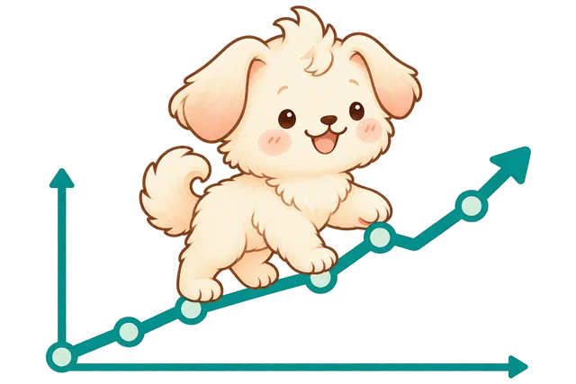
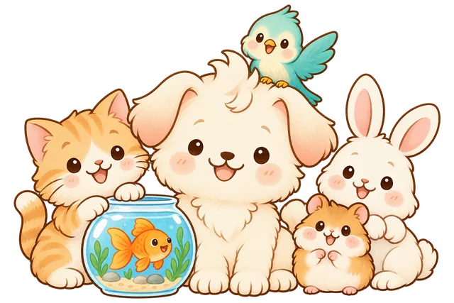

활동 1. 데이터 조사관이 되었어요
강아지와 고양이 중 누가 더 인기일까요? 교실에서 먼저 토론한 뒤, 진짜 데이터로 확인해 봐요.
① 교실 토론 — 누가 더 인기일까요?
내 생각을 먼저 골라요. 그리고 친구들과 이유를 나눠봐요.
② 구글 트렌드로 검색량 비교하기
아래 링크에서 최근 5년 · 대한민국으로 설정해 '강아지'와 '고양이'를 비교해 봐요.
구글 트렌드 · 강아지 vs 고양이 열기미리 살펴보는 데이터 (2021~2026 · 검색 관심도)
출처: Google Trends (2026.05 추출, 가장 큰 값을 100으로 환산)
데이터셋 내려받기
조사 결과를 사진으로 공유해요!
활동 2. 한 발짝 더, 동물 데이터를 들여다봐요
우리나라에는 매년 수많은 유기동물이 생겨요. 진짜 데이터를 직접 정리해 보고, 엔트리로 차트도 만들어 봐요.

① 동물보호관리시스템에서 유기동물 공고 살펴보기
사이트에서 '보호중인 동물' 또는 '공고중인 동물'을 검색해 우리 지역의 유기동물을 확인해 봐요.
동물보호관리시스템 열기빈 템플릿 내려받기 (직접 조사해서 채우기)
유기동물 정리 템플릿 CSV② 종류·연도별 유기동물 변화 정리하기
| 연도 | 개 | 고양이 | 그 외 |
|---|---|---|---|
| 2022 | |||
| 2023 | |||
| 2024 | |||
| 2025 |
③ 엔트리 '데이터 분석'으로 차트 그리기
엔트리에 접속해서 [작품 만들기] → [데이터분석] → [테이블 불러오기] 순서로 위의 표를 입력하고, 그래프 보기로 시각화해 봐요.
- 엔트리 회원가입 후 '작품 만들기'에 들어가요.
- 왼쪽 메뉴에서 '데이터분석' 블록을 골라 '테이블 불러오기'를 눌러요.
- 표를 직접 입력하거나 CSV로 붙여 넣어요.
- '차트' 탭에서 막대 또는 꺾은선을 골라 그래프를 만들어요.
유기동물 보고서를 사진으로 공유해요!
활동 3. 여러 종류의 반려동물을 살펴봐요
우리나라 가정에서는 어떤 동물을 키우고 있을까요? 통계청 자료로 살펴보고, 나의 새 가족 후보도 골라 봐요.

① 우리나라에서 가장 많이 키우는 반려동물은?
2025년 국가승인통계(반려동물 양육현황 조사) 결과를 살펴봐요.
출처: 농림축산식품부·검역본부 「2025년 반려동물 양육현황 조사」(국가승인통계, 양육가구 n=867, 중복응답)
데이터셋 내려받기
29.2%
우리나라 가구 중
반려동물을 키우는 비율
13.1마리
어류를 키우는 집은
평균 이만큼!
6년 5개월
반려동물과 함께한
평균 시간
② 우리 곁의 다양해진 반려동물 (관심 가는 동물을 모두 골라요)
※ 동물보호법상 등록 대상 반려동물 6종: 개·고양이·토끼·페럿·기니피그·햄스터
📊 나도 어린이 통계청
우리 반 그래프를 직접 만들어 봐요
조사 주제를 고르고, 손을 든 친구 수를 +로 세거나 통계 숫자를 넣으면 그래프가 바로 그려져요. 어떤 그래프가 가장 잘 보이는지 바꿔 가며 비교해 봐요.
1 표 만들기
2 그래프 고르기
3 완성된 그래프
3~4차시에는 인공지능과 함께 이 친구를 만나볼 거예요. 가장 궁금한 것은 무엇인가요?
나의 동물 카드를 사진으로 공유해요!